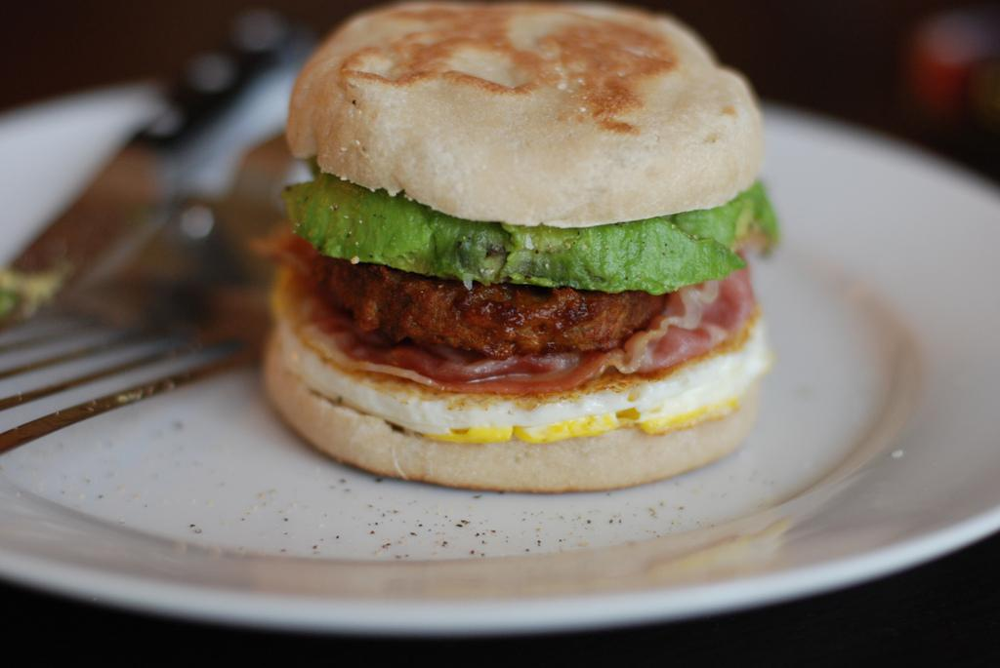

Món ăn Mỹ

Các sân bay nước Mỹ không chỉ là nơi đưa bạn đến các điểm du lịch hấp dẫn mà còn là những nơi tuyệt vời để bạn khám phá những điều mới lạ.
Nếu từng đến nước Mỹ chắc hẳn bạn đã quá quen thuộc với những sân bay rộng lớn, những chiếc máy bay, những quy định và thủ tục của các hãng hàng không, thậm chí là cả những tiếp viên hàng không xinh đẹp. Thế nhưng bạn đã từng nếm thử các món ăn hấp dẫn ở sân bay chưa? Nếu chưa, bạn có thể tham khảo những thông tin sau đây và thử một lần khám phá hương vị ẩm thực của các món ăn ngon nơi “phi trường” nước Mỹ này nhé!
Sandwich trứng
Món sandwich trứng tại sân bay quốc tế Fprt Lauderdale (Florida) được đánh giá là một trong những món ngon nhất ở các sân bay Mỹ. Món này gồm thịt nướng, trứng bác, vài lát phô mai và hoa quả được kẹp trong một chiếc bánh tròn vừa mềm vừa thơm.
BBQ
Một món ăn nhanh nhiều dầu mỡ sẽ không được những vị khách đang ăn kiêng lựa chọn, thế nhưng đến sân bay Charlotte (North Carolina) mà chưa nếm thử hương vị của món ăn này hẳn sẽ khiến bạn phải nuối tiếc.
Các món BBQ tại cửa hàng BBQ nằm trong sân bay này được ưa chuộng tới mức mỗi ngày cửa hàng này tiêu thụ tới hơn 45.000 kg thịt lợn. Qua đó cũng có thể thấy dù là những món ăn nhanh nhiều dầu mỡ nhưng hương vị ở đây lại rất độc đáo và thu hút.
Bánh mỳ kiểu Mexico
Những chiếc bánh Mỳ thực sự tiện lợi và quen thuộc với mỗi chúng ta, tuy nhiên, hương vị của bánh Mỳ kiểu Mexico có tại sân bay quốc tế Chicago O’Hare (Illinois) dường như vẫn có sức hút riêng.
Món bánh mì kẹp thịt kiểu Mexico tại nhà hàng Tortas Frontera, sân bay quốc tế Chicago O’Hare (Illinois) ngon miệng với phần thịt độc đáo được chế biến khéo léo kẹp bên trong. Món ăn được phục vụ bất kỳ thời điểm nào trong ngày và bạn có thể dễ dàng dùng thử nếu cảm thấy thích thú.
Mỳ
Trong số các thức ăn nhanh và tiện lợi nhất thì không thể thiếu Mỳ, tuy vậy, bạn có thể sẽ thay đổi ý nghĩ đó khi tận mắt chứng kiến “ nghệ thuật” nấu mỳ của các đầu bếp đến từ nhà hàng Shoyu tại sân bay quốc tế Minneaplis-St.Paul (Minnesota ).
Món Mỳ ở nhà hàng Shoyu tại sân bay quốc tế Minneaplis-St.Paul (Minnesota) có hương vị khá thú vị. Điểm hay ở đây là khách hàng có thể dùng Ipad để gọi món, sau đó họ có thể tận mắt chứng kiến người đầu bếp “múa lượn” với các sợi Mỳ trong một căn bếp “mở” với các vách ngăn bằng kính.
Hải sản
Có thể bạn sẽ ngạc nhiên vì trong danh sách các món ngon hấp dẫn ở sân bay nước Mỹ này lại có hải sản, một trong những món được chế biến khá cầu kỳ và cẩn thận. Ấy vậy mà nhà hàng trong sân bay quốc tế Seattle-Tacoma (Washington) lại sẵn sàng phục vụ bạn món Hải sản đặc biệt này.
Có thể gọi nhà hàng Anthony ở sân bay quốc tế Seattle-Tacoma (Washington) là “nhà hàng đặt trong sân bay” bởi nó không chỉ cung cấp đồ ăn nhanh mà còn rất đa dạng về món. Hải sản tại nhà hàng này được đánh giá là rất tươi ngon với các hương vị riêng chỉ nơi đây mới có.